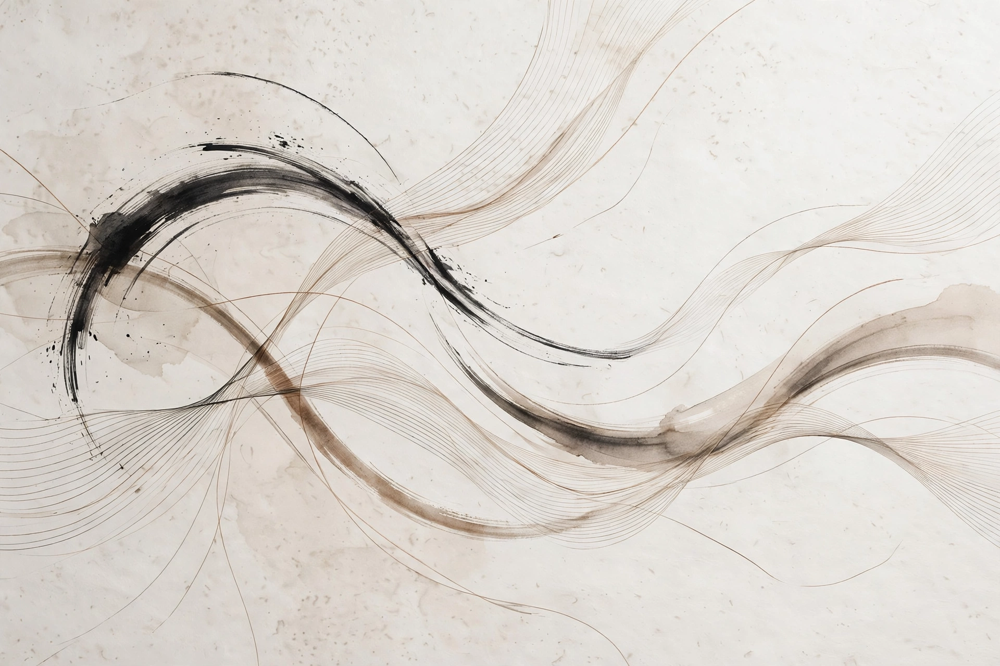
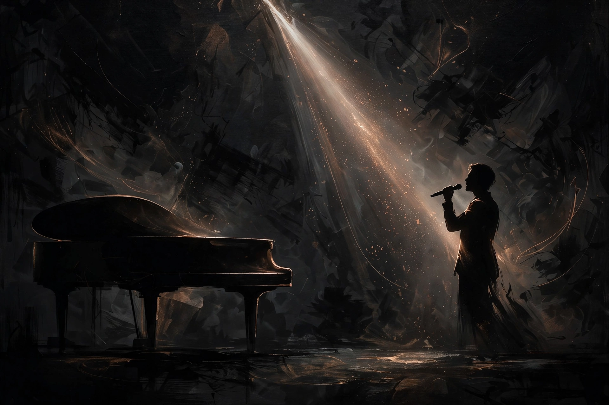

01
Gratitude
So grateful to be writing again. Wrote this one this week. It feels good to experience gratitude through every experience of life.
Read on InstagramThis is my corner of the internet — mine alone. I'm Abraham Cruz: poet, singer, and composer. I write a bunch of poetry, I sing opera, I teach music in San Antonio — and right now I'm writing an opera of my own. Everything here is my work: the poems, the images, the music in progress.
I'm Abraham Isai Cruz Ramirez of San Antonio, Texas. Poetry came first — I've written a bunch of it, poem after poem on gratitude, healing, love, and what it means to be human, and I share each one as an image at @elartistabe. Song came with it: I'm a singer with Austin Opera, where I sing in the chorus of Thaïs — and the Servant — and in La traviata.
By day I direct Cruz Music Studio, teaching voice at every level, piano from beginner to intermediate, and beginner guitar — and I run Music For All Hearts, the nonprofit I brought to life in 2024. Now all of it is flowing into the biggest thing I've ever made: an opera of my own, Bajo el mismo cielo.

Poetry in song — song in poetryI write a bunch of poetry — on gratitude, healing, love, and being human — and I share each poem as an image, as @elartistabe on Instagram. Here are all forty-three poems, newest first, each with its original image post embedded right below it — the poem exactly as I posted it. If an embed can't load where you're viewing this, its link opens the original post on Instagram.
So grateful to be writing again. Wrote this one this week. It feels good to experience gratitude through every experience of life.
Read on InstagramWhat a beautiful way it is to live with gratitude.
Read on InstagramThe older I get, the more I believe: Love and the actions of people are not the same thing.
Read on InstagramThis poem was born from something I've been reflecting on deeply this month. Truth is not always what we believe it to be when we first encounter it.
Read on InstagramThis poem is supposed to feel like you are writing as you read it — as you get to hear your voice in a real life experience.
Read on InstagramUntitled poem — on being human, and meditation
Read on InstagramWhat does it mean to heal? Is it forgiveness? Letting go of people? Or is it performance?
Read on InstagramHealing doesn't mean erasing the past, it means being able to look at it with gentleness.
Read on InstagramSometimes loss becomes the doorway to finding who we are.
Read on InstagramEvery human emotion is powerful and beautiful — how we grow, transform, and embrace the depth of the human experience.
Read on InstagramA poetic farewell, where memory prepares a final feast, time calls for departure, and the soul finds its rest.
Read on InstagramFamiliarity can feel good. But it does not mean it is good for us. Study yourself and look at all the layers.
Read on InstagramLove is so powerful and I believe it is a gift. A gift that is heavy to hold.
Read on InstagramThe truth is, each day is practice. And what we do each day repeatedly becomes permanent. So choose yourself every day.
Read on InstagramAt times, the ones we'd do anything for are the ones that take everything that makes us complete.
Read on InstagramUntitled poem — on love and life
Read on InstagramUntitled poem — on love and life
Read on InstagramUntitled poem — poetry is not dead; spilled ink for poetry lovers
Read on InstagramLetting go expectations
Read on InstagramWe are all dreaming. And our lens of the world impacts our emotional body.
Read on InstagramIt is so important to dig deep and allow ourselves to sit in discomfort. That is when we can start the process to healing.
Read on InstagramWe are the artists of our lives, and the way we love will be returned to us.
Read on InstagramThis poem embodies one of the love languages — quality time.
Read on InstagramOnly we know the depths of our love.
Read on InstagramLove teaches us so many things — we must always love ourselves fully so that we are ready to truly love another.
Read on InstagramYou can only love your surroundings to the amount that you love yourself.
Read on InstagramLove has always been about you.
Read on InstagramThe loss of color is the loss of love and life.
Read on InstagramUntitled poem — on love and life
Read on InstagramThe power of silence, and sitting with our emotions.
Read on InstagramStrong emotions come in waves, sometimes so heavy they take so much space — allowing yourself to feel them is the key.
Read on InstagramLove. The best feeling in the world.
Read on InstagramThe end of love is a new beginning for the love we deserve.
Read on InstagramLove can do so many things.
Read on InstagramI wrote this poem a while back. I'm still amazed at how it makes me feel reading it to this day.
Read on InstagramOur greatest pain is also our greatest lesson.
Read on InstagramFriendly reminder: allow for everything good in life to grow organically.
Read on InstagramUntitled poem — on karma
Read on InstagramOur biggest trials shape the heart we now carry.
Read on InstagramSpace creates and heals.
Read on InstagramIt's better to exit than to fit into something we don't want to be.
Read on InstagramLove is the universe's language for growth and healing. It's why we all desire to be loved.
Read on InstagramThe first post: an account about poetry, art, mental health, and all things that make the human body breathe.
Read on InstagramThe collection begins with “The first post” — an account about poetry, art, mental health, and all things that make the human body breathe — and arrives, forty-three poems later, at gratitude.
I'm composing an opera and writing its libretto: Bajo el mismo cielo — “Under the Same Sky.” A bilingual Spanish–English opera in one act, about eighty minutes, and built for Young Artist Programs.
Nine soloists — and a chorus that appears only twice: at the opening crossing, and at a father's death. The full libretto is drafted, with an aria for every role. Esperanza's Scene 6 aria, “Con Todo Mi Ser” — music and lyrics by me — is already out in the world: a soprano is working on it now, and I hope to record it at Austin Opera.

Bajo el mismo cielo — Under the Same SkyTap a thread to explore the emotional landscape that runs through my poems — and straight into the opera.
Gratitude is where the collection arrives. After forty-three poems of loss, love, and repair, the most recent work — including the poem simply titled “Gratitude” — practices thankfulness through every experience of life, not just the easy ones.
It all connects: the poems feed the opera, the opera feeds the singing, and the singing is what I teach every week in San Antonio.
I direct Cruz Music Studio and teach voice at all levels, piano from beginner to intermediate, and beginner guitar — in person at the studio, in-home, and online.
Start with the poems →In 2024 I brought Music For All Hearts to life — bringing music to children and families. It's the heart behind everything else on this page.
See the opera in progress